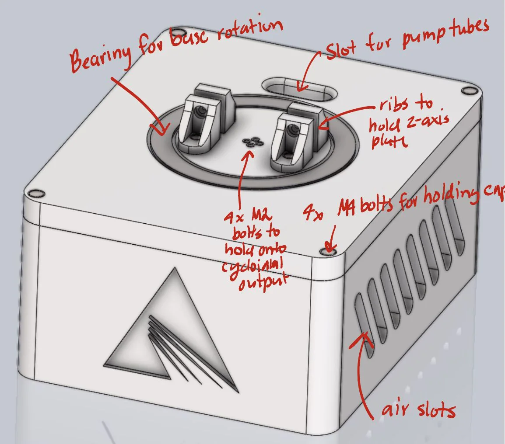
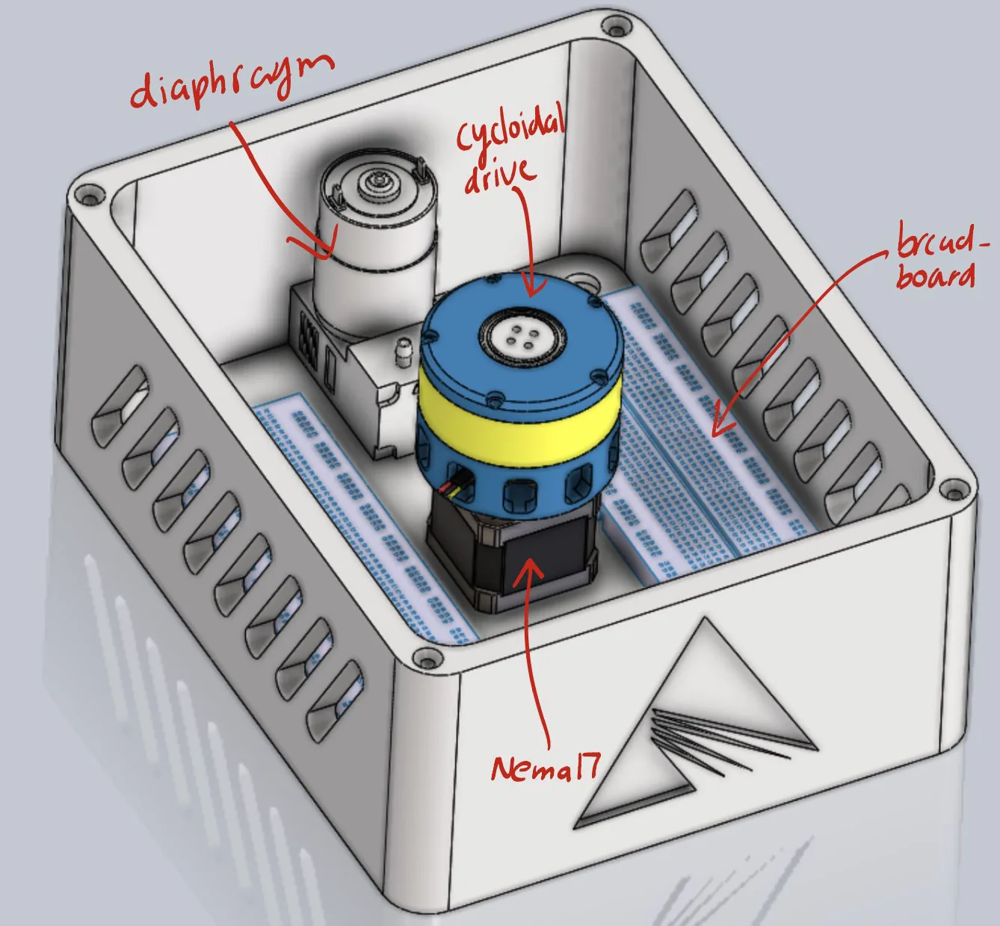
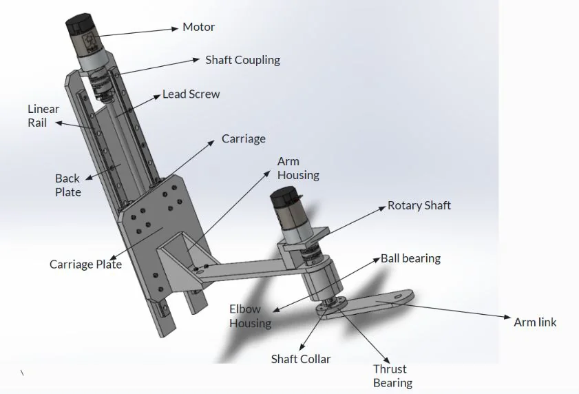
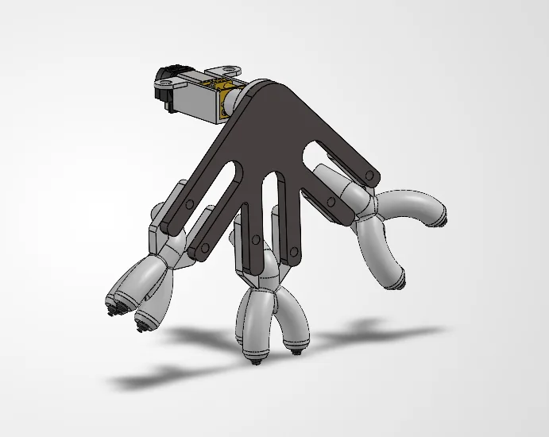
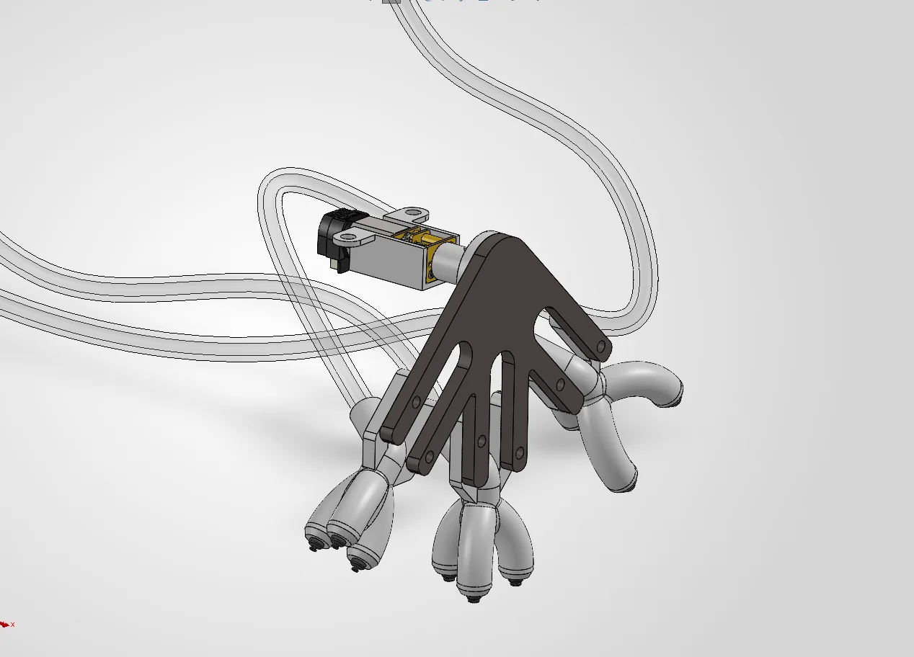
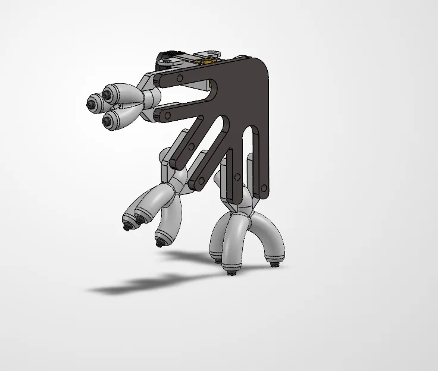
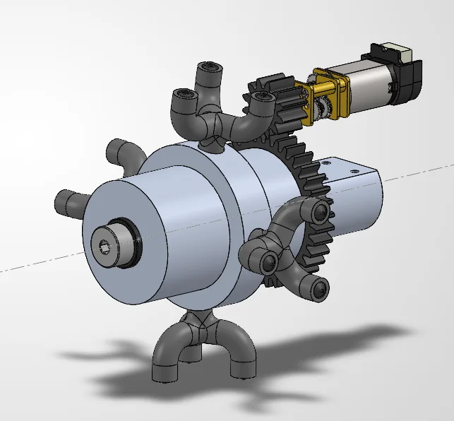
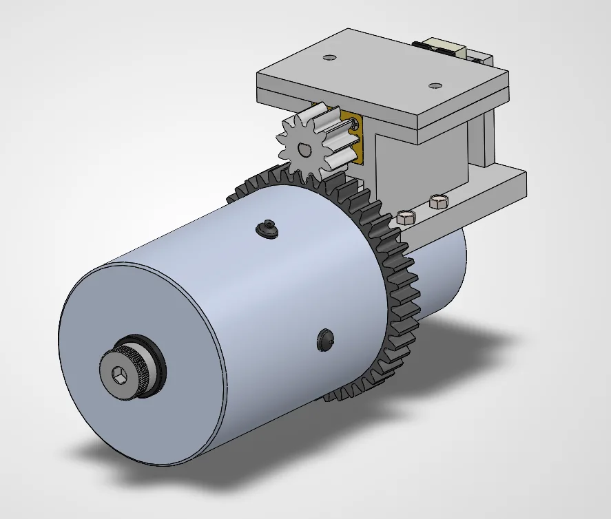
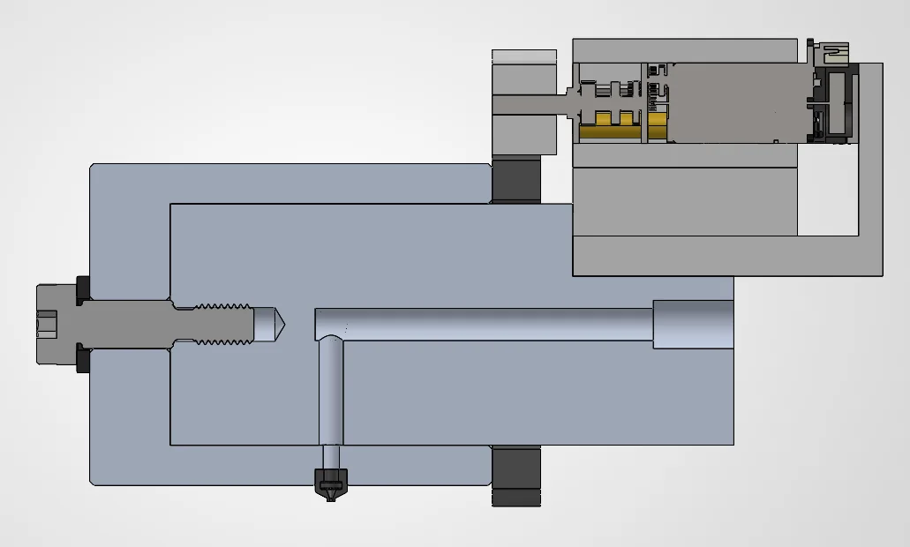

In progress. This page covers the design so far (October 2026). I’ll update it as we build and test the robot.
The challenge
Assembling semiconductor equipment involves handling quartz components with a very high surface finish. Lam Research asked our team to pick and place these parts with small vacuum cups, and to have the robot choose the right cup for each part on its own.
- Objective
- Pick and place quartz components of varying sizes with surface roughness of Ra 4 and 8 µin, using a robotic rig fitted with small vacuum cups.
- Requirements
- Predict the lifting capability (weight) of each nozzle size
- Determine the highest allowable load per mm² of nozzle opening with a factor of safety of 2, for commercially available cups under 2 mm in diameter
- Automatically select the cup size from the component’s weight: smaller parts get a smaller cup, bigger parts a bigger one
- Constraints
- $500 team budget
- Final oral presentation to Lam Research representatives
System design
The team split the robot into three main assemblies: the base, the vertical axis and arm, and the vacuum cup selector at the end of the arm.
Base
A NEMA 17 stepper motor with a custom cycloidal drive rotates the robot about its vertical axis, and a diaphragm pump pulls −80 kPa for the vacuum system. A 6819ZZ deep-groove ball bearing press-fits into the base cap, with a flanged lip below so it can’t fall through.




Vertical axis and arm
A motor-driven lead screw raises and lowers the arm assembly, guided by two linear rails and four carriages to resist tilting. Motor-driven arm links position the cup selector horizontally to reach each part. Bearing-to-shaft connections use transition or light interference fits to limit slipping, while couplings and hub collars use clearance fits secured by clamps.


Vacuum cup selector
My part of the robot is the cup selector, which gives the robot the right cup size for each part. I’ve taken it through two different designs so far.
Current design: rotating cup bracket
Version 3 (October 2026) is a new approach. A DC gearmotor turns a three-armed bracket that carries three cup clusters, one each for 2 mm, 3 mm, and 4 mm cups, with three cups per cluster. Each cluster has its own vacuum line. Turning the bracket changes which cluster points down toward the part.






First design: gear-driven rotary valve
My first design was a gear-driven rotary vacuum valve that routed −80 kPa from the pump to 1 of 4 cup sizes based on the weight of the part. A small DC gearmotor turned the valve through a 12-tooth pinion and a 36-tooth gear (module 1, a 3:1 reduction), so rotating the valve sent vacuum to one outlet at a time.
I took it through six versions in SolidWorks between late September and mid-October 2026. The early versions worked out the gear drive and a bracket to mount the motor; later versions added splitters at the outlets.






What’s next
The remaining goals from the project brief:
- Predict the lifting capability of each nozzle size, and the highest allowable load per mm² of nozzle opening at a factor of safety of 2.
- Build the robot and demonstrate automatic cup selection based on each component’s weight.
- Present the final design to Lam Research representatives at the end of the semester.